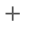

Main Toolbar
The Main Toolbar provides access to the report editing commands in the Web Report Designer.
| Command | Icon | Description |
|---|---|---|
| Cut | Cuts the selected control to the clipboard. | |
| Copy |  |
Copies the selected control to the clipboard. |
| Paste |  |
Pastes a control from the clipboard onto the selected report band. |
| Delete |  |
Deletes the selected control. |
| Undo |  |
Cancels the last change made to the document. |
| Redo | Reverses the last undo action. | |
| Zoom Out |  |
Decreases the document's current zoom factor by 5 percent. |
| Zoom Factor |  |
Zooms to a specific zoom factor selected from the dropdown list. |
| Zoom In |  | Increases the document's current zoom factor by 5 percent. |
| Validate Bindings |  |
Highlights report controls with invalid data bindings or incorrect expressions. |
| Full Screen |  |
Toggles between the Report Designer's full screen and default size. |
| Preview |  |
Switches to Preview Mode. |
| Design | Switches to Design Mode. |